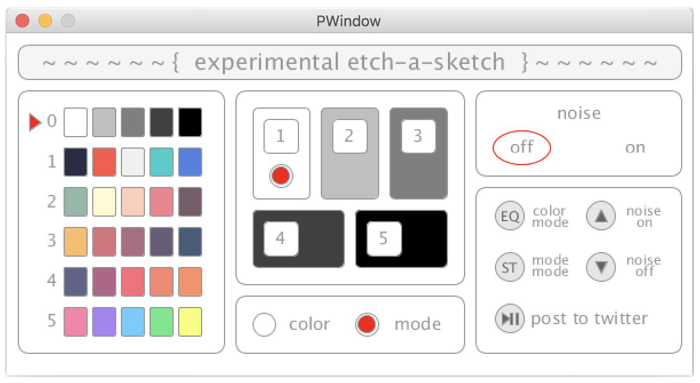

This project was created for a class titled Introduction to Computation at RISD (RISD0420B) and utilizes the different visual, physical, and networking elements discussed throughout the course. The project materializes itself in the hardware of the Arduino, visualizes itself as a user creates it as interfaced through a Processing sketch, and archives itself by being posted to Twitter under the account @assignment3_jh (which has been deactivated recently for security sake). The hardware consists of an Arduino Uno, a breadboard, a joystick, an IR receiver and remote, and miscellaneous wires. The functionality of these controllers are found on the software side of things, where the movements of the joystick parallel the movements of the drawing point and the different buttons of the IR controller toggle or change different options. To aid the user in mastering the hardware, a second sketch window consisting of an interface pops up, indicating the different modes, colors, and settings the user has set (which will be shown below).
All active software elements and options are displayed on the second screen of the program. This controller panel is shown below.
The left-most column represents the different modes the user can operate over. To maneuver through these options, the user must press the ST button on the remote which will toggle the controller mode to mode — as is indicated by the red radio button in the bottom center module. The user would then hit any of the buttons from 0 to 5 to choose a mode. The middle module with the five differently colored boxes indicates the different colors within the selected mode that the user can use on the drawing. To choose between these colors, the user must hit the EQ button on the remote to change the remote to color mode — as would also be indicated in the lower middle module. After doing that, any of the colors can be selected with their respectively numbered button. To add noise to the drawing tool, the user simply needs to hit the ▲ button. The upper right module will indicated that noise is turned on with the red ellipse. To turn off noise, the user must hit the ▼ button. After fiddling around with the joystick and different options with the controller, the user can finish by hitting the ⏯ button and sending a saved image of the sketch to the previously mentioned Twitter account.
All relevant code for this project can be found in the following Github repository.